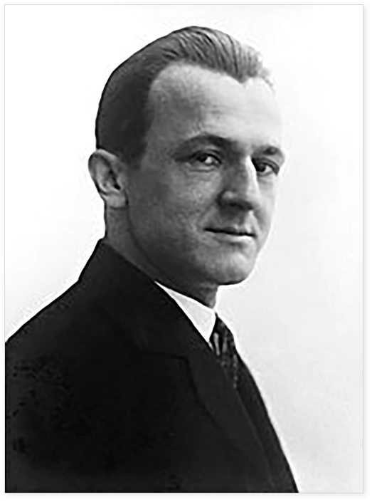
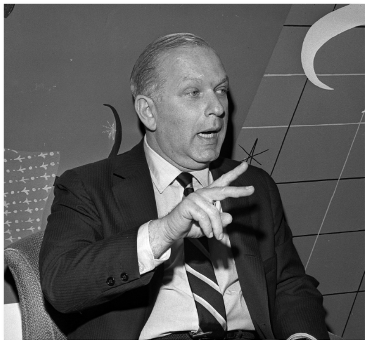

폴 랜드
초기 작품에
많은 영향을 끼친
예술가
George Grosz
게오르게 그로츠
폴 랜드에게 디자인을 가르쳐준 사람은 아트 스튜던트 리그에 강사
로 있던 다다주의자 조지 그로스즈(George Grosz)였는데, 그는 폴
랜드의 초기 작품에 많은 영향을 끼쳤다. 폴 랜드가 디자인 공부를
할 당시의 아트스쿨은 거의 순수미술(Fine Art)에 관한 것이었고,
단지 몇 학교만이 상업미술(Commercial Art)이라고 불려진 응용
미술(Applied Art)형태의 실험적인 연구를 하고 있었다.
그 당시 지배적이던 예술철학은 화가나 공예가로서 재능이 부족한
학생은 상업미술가로 진로를 바꾸어야 한다는 것이었다. 이처럼 당
시 미국의 디자인 학교에는 체계적인 교육 프로그램이 없었기 때문
에 그는 학교교육보다는 독학으로 디자인을 공부했다고 할 수 있으
며, 그래픽 디자인 초기 시대의 많은 다른 디자이너들처럼 스스로
자신의 예술세계를 만들어 나갔고 그것을 확고히 했다.

선입관을
갖고 있지 않은
카피라이터
William Bernbach
윌리엄 번바크
폴 랜드가 윌리엄 웨인트라브사에서 경력을 쌓아가고 있을 즈음 윌리엄 번바크
(William Bernbach)를 만나게 되었는데, 폴 랜드는 윌리엄 번바크와의 첫 만남을 “미
대륙을 발견한 콜럼버스와 유사한 것”이었다고 기술하고 있다. 그리고 계속해서 말하기
를 그 만남은 “시각적인 사상을 이해하며, 광고란 반드시 이렇게 보여야 한다는 선입관
을 갖지 않은 아트디렉터와 카피라이터의 최초의 만남이었다”고 말했다. 윌리엄 번바크
는 1949년에 동료들과 함께 도일 덴 번바크(Doyle Dane Bernbach)를 세웠는데 그는
그곳에서 카피라이터로 일했다. 그들은 그 당시 광고 디자인의 개념을 무너뜨리고 미래
광고의 방향성을 설정하는 중요한 작업을 했다.
윌리엄 번바크가 그레이 에이젼시(Gray Agency)로 옮긴 몇년 후, 폴 랜드와 번바크는
뉴욕 오바치즈(Ohrbach's)백화점의 디자인을 위해 다시 만났고, 몇 년동안 그들은 현
재까지도 유명한 신문 광고를 열정적으로 창출했다. 과거의 카피라이터가 헤드라인과
바디카피를 먼저 쓰고 난 후 그것을 가지고 아트디렉터가 레이아웃을 하던 식의 광고에
서 벗어나 번바크의 기획아래 폴 랜드는 디자인을, 번바크는 카피를 만듬으로써 광고에
있어서의 전통적 관습을 타파하였다. 이들은 이러한 사상이 최초로 드러난 뉴욕 오바치
즈 백화점의 광고캠페인을 2년 이상 제작함으로써 디자인에 재미있는 재담과 말의 유희
을 보여 주었는데, 이는 그는 디자인 작업외에도 교육과 저술활동을 병행하여 쿠퍼 유니
온(Cooper Union)과 프랫 인스티튜트(Pratt Institute)에서 그래픽 디자인을 가르쳤
고, 예일(Yale)대학에서는 30년 넘게 그래픽 디자인과의 교수로 재직했다.